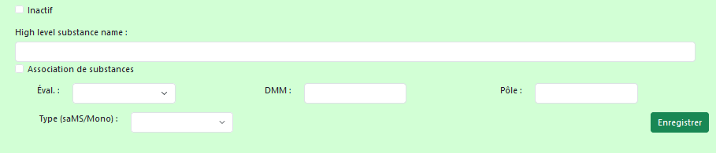
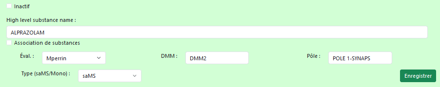
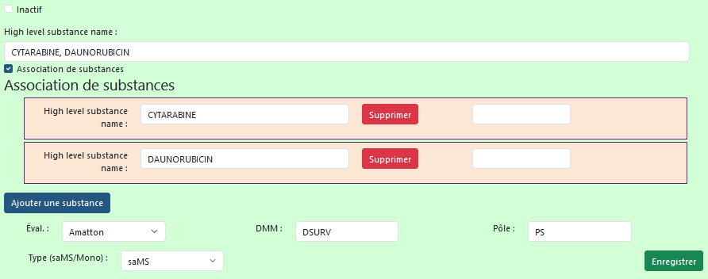
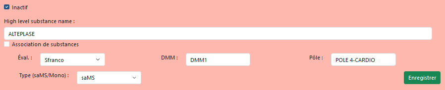
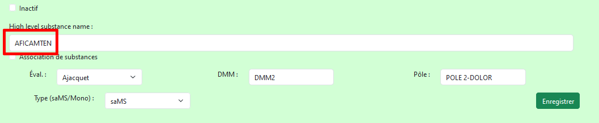
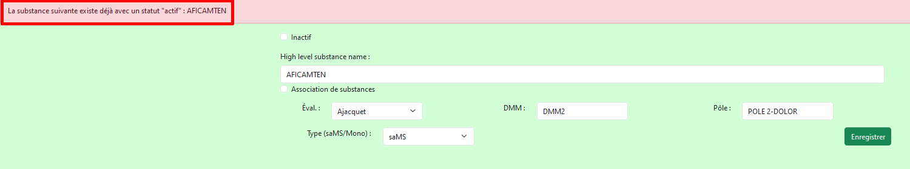
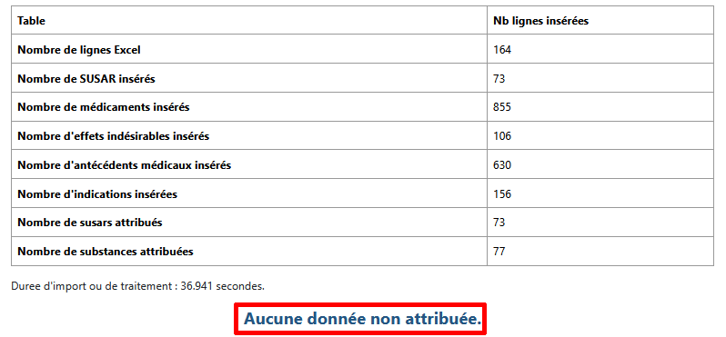

Mode opératoire de l’application SUSAR_EU_V2 2
I - Gestion des substances « suivies » – Action pilotes VEC/DSURV 2
A - Mise à jour de la liste des substances par les pilotes VEC 2
II – Import des fichiers CTLL - Action DMFR 6
A – Récupération de la liste des substances actives 6
B – Copie de cette liste des substances actives dans le site EVDAS de l’EMA 7
C – Importation du fichier « CTLL (Clinical Trial Line Listing).xlsx » dans SUSAR_EU_v2 11
Introduction
L’application SUSAR_EU_v2 vise à remplacer un précédent outil développé sous Access (SUSAR_EU) qui ne permettait pas son utilisation en télétravail. De plus, l’importante quantité de données après plusieurs années d’utilisation le rendait très lent. Ces deux problèmes sont dans résolus avec cette nouvelle version.
SUSAR_EU_v2 est une application développée en PHP/Symfony, les utilisateurs y accedent depuis un navigateur (Firefox et Chrome ont été testés), via l’URL suivante :
http://172.16.63.170/susar_eu_v2/public/index.php/
L’utilisateur est alors invité à se connecter, le login est son adresse mail ANSM.
Si l’utilisateur n’a pas encore de compte actif, il peut en faire la demande directement auprès de l’administrateur de l’application : Frederic.RANNOU@ansm.sante.fr
Dans le menu « Gestions de substances », sélectionner « Intervenants/substances » :

Comme cela se faisait dans la table « Intervenant_Substance_DMM » de susar_eu_v1, une mise à jour de la liste des substances saMS ou Mono-nationale doit toujours être réalisée.
Un écran dédié aux pilotes VEC est disponibles depuis les liens mentionnés plus haut.
Sur cet écran, tous les substances s’affichent pour le moment, en vert les actives et en rouges celles qui sont inactivées, avec un tri alphabétique par nom de substance. Ce nom correspond au « high level substance name ».
Il est prévu d’ajouter ultérieurement, un champ permettant de filtrer les substances affichées selon le nom, si la ligne est active ou pas, la direction, le pôle, …
Dans la partie supérieure de cet écran un bouton
 permet
d’ouvrir un écran afin d’ajouter une ligne dans la table
correspondante :
permet
d’ouvrir un écran afin d’ajouter une ligne dans la table
correspondante :

Les champs suivants sont obligatoires :
High level
menu déroulant « Éval. » : après sélection d’un évaluateur, la DMM et le pôle est automatiquement affiché.
Type (saMS/Mono)
Exemple : 
Dans ce cas l’utilisateur peut simplement valider après avoir rempli les 3 champs listés plus haut.
Il sera alors redirigé sur l’écran de la liste « intervenant substance DMM » avec la nouvelle ligne qui vient d’être crée.
Avec ce type de paramétrage, la DMFR recherchera tous les « low-level substance name » lié au high level renseigné pour qu’ensuite l’import BNPV se fasse par low-level.
Dans ce cas, l’utilisateur doit cocher la case
 , ce qui fait apparaitre un nouveau bouton, permettant d’ajouter
plusieurs substances.
, ce qui fait apparaitre un nouveau bouton, permettant d’ajouter
plusieurs substances.
Pour ce type de paramétrage, le high-level principal (celui situé en haut de l’écran, dans la zone verte) ne sera pas celui qui sera utilisé pour la recherche des différents low-level.
Mais ce seront les différents « sous high-level » (ceux situés dans les sous-formulaires jaunes) qui seront mappé avec leurs low-level puis utilisés dans la recherche des substances lors de l’import.

Il est bien entendu possible de supprimer, grâce au bouton rouge, une substance liée.
Cette fonctionnalité est disponible en cas d’erreur de saisie sur une ligne du paramétrage.
Il ne doit pas être utilisé pour « transformer » une ligne affectée à une substance vers une autre.
Dans ce dernier cas, il convient d’inactiver l’ancienne substance, puis d’en créer une nouvelle.
La modification est donc possible en cliquant sur le bouton .
.
Tous les champs sont alors modifiables, qu’il s’agisse d’une association de substance ou pas.
Il est souhaitable d’inactiver une substance, plutôt que de l’effacer, ceci afin de garder un historique.
Pour cela cliquer sur le bouton
 .
.
Puis de cocher la case
 .
.
Le fond du formulaire apparait alors en rouge :

On valide ensuite avec le bouton « enregistrer ».
Il est bien entendu possible d’effectuer l’opération inverse, pour réactiver une ligne.
S’il existe déjà une substance qui a un statut « actif » dans la base de données (par exemple AFICAMTEN, en vert) :

Et que l’utilisateur souhaite, par erreur, récréer une substance :

À la validation, le système affichera un message d'erreur et l'enregistrement de cette substance ne se fera pas :

Cette étape est nécessaire car elle permet de récupérer, via EUDRA vigilance, la liste des substances « synonymes » aux « high-level substance name » renseignées par les pilotes VEC lors de l’étape précédemment décrite.
Une fois ces données récupérées puis chargées dans SUSAR_EU_v2, elles seront utilisées par le script d’import automatique qui tourne toutes les nuits. Ce script permet d’alimenter la base SUSAR_EU_v2 à partir des données issues de la BNPV en requêtant par « low-level ».
Ainsi on récupère tous les cas y compris si la substance change de nom (passage d’un code produit a une DCI, formatage différent selon les pays, …).
Dans le menu « Gestions de substances », sélectionner « Liste des high level (pour requête EVDAS) »

Une liste des substances apparait alors

Cette liste doit être copiée sur le site EVDAS …
… et sur l’onglet « CTLL (Clinical Trials Line Listing) ».

Avant la copie de cette liste de substances, il est nécessaire de réinitialiser les différents champs grace au bouton suivant :

Il convient ensuite d’ouvrir le menu déroulant « * Active Substance (High Level) », il faut cliquer sur « More/Search ».

Si la fenêtre qui s’affiche contient des données dans le champ « Selected » situé a droite, il faut tout supprimer en cliquant sur le bouton « Remove All » .

Puis cliquer sur l’icône « crayon ».
Ce qui ouvre encore une nouvelle fenêtre, dans laquelle il faudra éventuellement effacer l’intégralité de son contenu (Ctrl + A, puis « Suppr » ou « retour arrière ») :

On revient dans susar_eu_v2, pour sélectionner toutes les substances (Ctrl + A), puis toutes les copier (Ctrl + C) …

… et ensuite toutes les coller dans la fenêtre EVDAS :

Il faut alors fermer les deux fenêtres EVDAS en cliquant une première fois sur OK

Puis une deuxième fois.
Le menu déroulant est maintenant replié, mais contient la liste des substances :

On sélectionne alors une fourchette de dates basée sur la « Gateway Date » :

On clique ensuite sur le lien « CTLL (Clinical Trial Line
Listing) » :

Ce qui déclenche l’ouverture d’une nouvelle page :

On exporte alors ces données générées grâce à « Export/Data/Excel »

Un export excel se crée …

… puis se télécharge :

Dans la barre de navigation, sélectionner « Import du fichier ‘Active substance grouping’ »

Dans l’écran suivant, il faut cliquer sur « Parcourir » puis sélectionner le fichier Excel précédemment téléchargé.

On lance ensuite l’import grâce au bouton « Import file » :

Lorsque l’import est terminé, un bilan affiche alors différentes informations.
L’application informe également l’utilisateur que tous les susars ont ben été attribués (à un évaluateur ANSM), grâce au message entouré en rouge, plus bas :

En cas de problème d’attribution de susar, le ou les cas en question sont directement affichés dans la partie basse de l’écran.
L’administrateur de la base doit alors être averti.